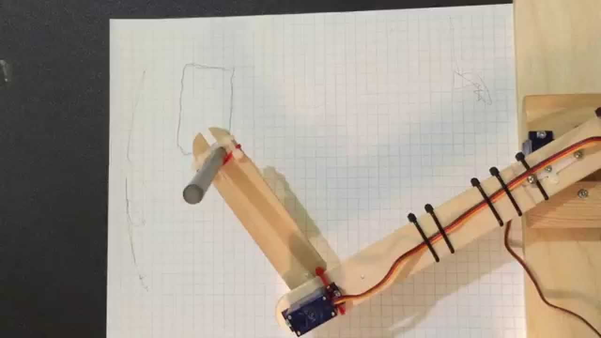

Vamos aplicar diferentes leis de controle ao modelo
obtido e comparar seu desempenho com base no traçado de trajetórias
indicadas, atravéz de um ambiente virtual e software de desenvolvimento
matemático (MATLAB).

Planar 2
O manipulador planar a 2
graus de liberdade (degrees of freedom - DOF) é o mais simples dos manipuladores interessantes, e a atribuição
de sistemas de coordenadas é
relativamente óbvia; bastará atender
ao eixo das duas juntas, e o resto sai naturalmente.